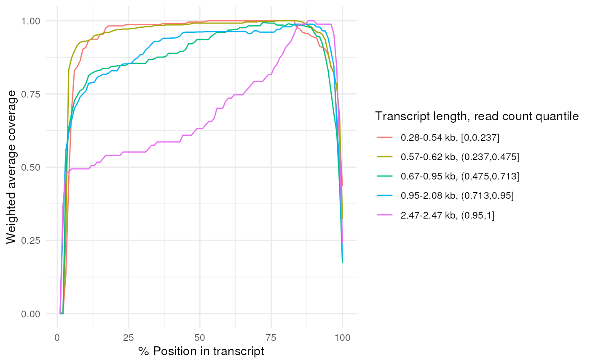
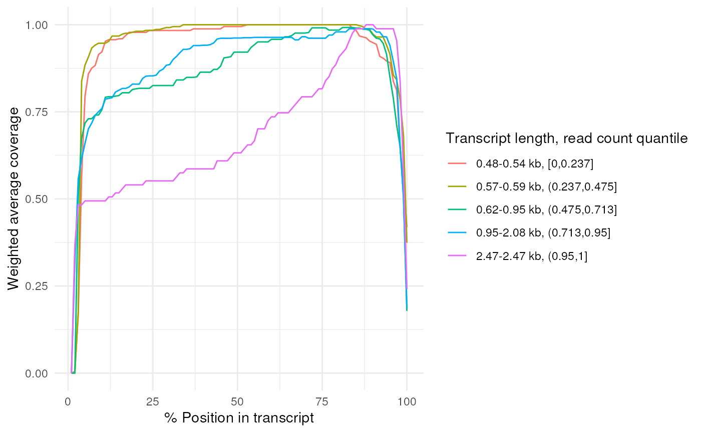

Plot the average read coverages for each length bin or a perticular isoform
Arguments
- x,
path to the BAM file (aligning reads to the transcriptome), or the (GenomicAlignments::readGAlignments) parsed GAlignments object, or the tibble returned by
get_coverage, or the filtered tibble returned byfilter_coverage.- quantiles
numeric vector to specify the quantiles to bin the transcripts lengths by if length_bins is missing. The length bins will be determined such that the read counts are distributed acording to the quantiles.
- length_bins,
numeric vector to specify the sizes to bin the transcripts by
- weight_fn
function to calculate the weights for the transcripts. The function should take a numeric vector of read counts and return a numeric vector of weights. The default function is
weight_transcripts, you can change its default parameters by passing an anonymous function likefunction(x) weight_transcripts(x, type = 'equal').- filter_fn
Optional filter function to filter the transcripts before plotting. See the
filter_fnparameter infilter_coveragefor more details. Providing a filter fucntion here is the same as providing it infilter_coverageand then passing the result to this function.- detailed
logical, if
TRUE, also plot the top 10 transcripts with the highest read counts for each length bin.
Examples
# Create a BAM file with minimap2_realign
temp_path <- tempfile()
bfc <- BiocFileCache::BiocFileCache(temp_path, ask = FALSE)
file_url <- 'https://raw.githubusercontent.com/OliverVoogd/FLAMESData/master/data'
fastq1 <- bfc[[names(BiocFileCache::bfcadd(bfc, 'Fastq1', paste(file_url, 'fastq/sample1.fastq.gz', sep = '/')))]]
genome_fa <- bfc[[names(BiocFileCache::bfcadd(bfc, 'genome.fa', paste(file_url, 'SIRV_isoforms_multi-fasta_170612a.fasta', sep = '/')))]]
annotation <- bfc[[names(BiocFileCache::bfcadd(bfc, 'annot.gtf', paste(file_url, 'SIRV_isoforms_multi-fasta-annotation_C_170612a.gtf', sep = '/')))]]
outdir <- tempfile()
dir.create(outdir)
fasta <- annotation_to_fasta(annotation, genome_fa, outdir)
#> Import genomic features from the file as a GRanges object ...
#> OK
#> Prepare the 'metadata' data frame ...
#> OK
#> Make the TxDb object ...
#> Warning: The "phase" metadata column contains non-NA values for features of type
#> exon. This information was ignored.
#> OK
minimap2_realign(
config = jsonlite::fromJSON(
system.file("extdata", "config_sclr_nanopore_3end.json", package = "FLAMES")),
fq_in = fastq1,
outdir = outdir
)
#> 03:56:24 AM Thu Oct 17 2024 minimap2_realign
#> Sorting by position
#> total mapped primary
#> /tmp/Rtmpsdk3vz/file20fb43015280/realign2transcript.bam 4554 3764 2500
#> secondary
#> /tmp/Rtmpsdk3vz/file20fb43015280/realign2transcript.bam 2051
# Plot the coverages directly from the BAM file
plot_coverage(file.path(outdir, 'realign2transcript.bam'))
#> Using quantiles to bin transcripts.
#> The number of transcripts is less than the inflection index, returning equal weights for the current bin.
#> The number of transcripts is less than the inflection index, returning equal weights for the current bin.

# Get the coverage information first
coverage <- get_coverage(file.path(outdir, 'realign2transcript.bam')) |>
dplyr::filter(read_counts > 2) |> # Filter out transcripts with read counts < 3
filter_coverage(filter_fn = convolution_filter) # Filter out transcripts with sharp drops / rises
#> 45 transcripts found in the BAM file.
#> 17(37.78%) transcripts failed the filter.
#> Failed transcripts account for 212 reads, out of 1193(17.77%) reads in total.
# Plot the filtered coverages
plot_coverage(coverage, detailed = TRUE)
#> Using quantiles to bin transcripts.
#> The number of transcripts is less than the inflection index, returning equal weights for the current bin.
#> The number of transcripts is less than the inflection index, returning equal weights for the current bin.
#> The number of transcripts is less than the inflection index, returning equal weights for the current bin.
#> The number of transcripts is less than the inflection index, returning equal weights for the current bin.
# filtering function can also be passed directly to plot_coverage
plot_coverage(file.path(outdir, 'realign2transcript.bam'), filter_fn = convolution_filter)
#> 52 transcripts found in the BAM file.
#> 19(36.54%) transcripts failed the filter.
#> Failed transcripts account for 215 reads, out of 1203(17.87%) reads in total.
#> Using quantiles to bin transcripts.
#> The number of transcripts is less than the inflection index, returning equal weights for the current bin.
#> The number of transcripts is less than the inflection index, returning equal weights for the current bin.
#> The number of transcripts is less than the inflection index, returning equal weights for the current bin.
#> The number of transcripts is less than the inflection index, returning equal weights for the current bin.
